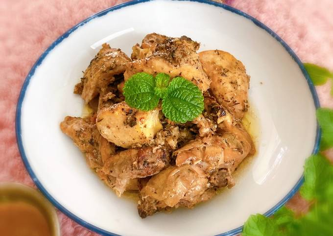

Ayam Panggang Bawang Putih
Resep Ayam Panggang Bawang Putih untuk disantap sehar-hari
Bahan Masakan
- 1 kg sayap ayam, patahkan & rapikan
- 1 bungkus Sasa Bumbu Lumur Ayam Spesial
- 6 siung bawang putih, cincang halus
- 1 sdm mentega
- 1 sdt peterselly cincang
Tambahan
- Kentang-kentang
Cara membuat Ayam Panggang Bawang Putih
- Larutkan 1 bungkus Sasa Bumbu Lumur Ayam Special dengan 1 sdm air. Lalu lumuri ayam dan diamkan 30 menit hingga bumbu meresap lalu susun diatas pinggan tahan panas yang telah dioles margarin, sisihkan.
- Campur mentega, bawang putih dan peterseli cincang,aduk rata hingga lembut.
- Olesi margarine di sayap ayam.
- Salad: Campur sayur dengan mayonnaise di dalam mangkuk.
- Panggang dalam oven suhu 180C hingga harum dan matang,angkat kemudian sajikan dengan kentang dan salad sayuran.